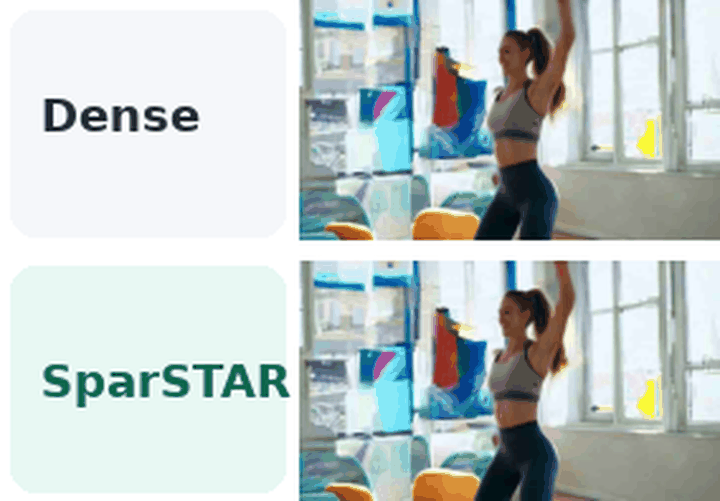
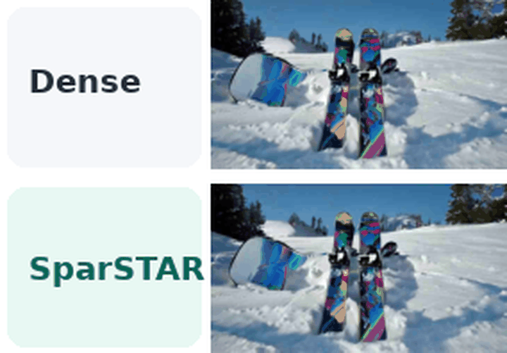
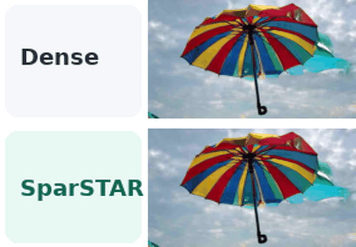

01
Patterns shift across scales

Cross-scale reuse loses substantial attention mass, while freshly recomputed block-wise selection stays close to the token-wise upper bound.
A training-free, clip-aware block-sparse attention framework that recomputes sparse support at every expensive autoregressive scale.
Video autoregressive attention patterns shift across scales and clip boundaries. Fresh aggregated-QK block selection preserves dense-generation fidelity while providing about 1.6× end-to-end speedup at 720p.
InfinityStar extends visual autoregressive generation to video through a sequence of image and clip pyramids. Its changing scale and cross-clip context, however, leave late-stage attention costly and make sparse patterns reused from diffusion or image VAR models unreliable. We introduce SparSTAR, a training-free block-sparse attention method tailored to this setting. At each expensive scale and attention head, SparSTAR scores contiguous key blocks from the current query and key activations, retains required conditioning context, and executes the selected blocks through a forward-only sparse path.
Our analyses show that important key blocks shift across scales and clips, making fresh selection more reliable than transferred masks. On 720p text-to-video and image-to-video generation, SparSTAR preserves every token and refinement scale while maintaining VBench and paired-output reconstruction fidelity close to dense InfinityStar.
Three observations motivate recomputing the sparse mask rather than transferring it.
Cross-scale reuse loses substantial attention mass, while freshly recomputed block-wise selection stays close to the token-wise upper bound.

At a 15% preceding-clip context budget, fresh Clip-2 selection retains 85% of attention mass versus 56% for reusing Clip-1 support.

Updating every scale recovers 1.73 dB over single transfer for only 0.30 seconds of additional latency in the reported 720p analysis.
Training-free sparsification without token pruning, KV eviction, or skipped refinement scales.

Queries and keys are partitioned into 128-token blocks. Per-head block compatibility is scored from the current activations.
Required conditioning context remains dense, while eligible current-scale and preceding-clip blocks are ranked under a scale-wise density budget.
Selected blocks are passed to a FlexAttention-based implementation that omits backward-only indexing structures during inference.
SparSTAR targets attention edges while preserving all tokens and refinement stages.
| Task | Method | PSNR ↑ | SSIM ↑ | LPIPS ↓ | VBench ↑ | Speedup ↑ |
|---|---|---|---|---|---|---|
| 720p T2V | Dense InfinityStar | – | – | – | 83.79 | 1.00× |
| SparSTAR | 31.22 | 0.898 | 0.065 | 83.83 | 1.60× | |
| 720p I2V | Dense InfinityStar | – | – | – | 81.04 | 1.00× |
| SparSTAR | 27.96 | 0.870 | 0.080 | 80.96 | 1.62× |

Hierarchical density schedule. The decreasing schedule allocates more density to earlier, cheaper refinement scales and the most aggressive budget to the final 72k-token scale.
Five sampled frames are animated for this draft. Replace them with full MP4 outputs before public launch.



The paper states that generation code, sparse selection, FlexAttention execution, preprocessing, metric computation, table aggregation, prompt/seed manifests, density schedules, timing scripts, and raw per-video outputs will be released upon publication.
@article{lee2026sparstar,
title = {SparSTAR: Sparse Attention for SpaceTime AutoRegressive Video Synthesis},
author = {Lee, Jongbeom and Yu, Hyunwoo and Yang, Jincheol and Choi, Jaemin and Kang, Suk-Ju},
journal = {arXiv preprint arXiv:XXXX.XXXXX},
year = {2026}
}Switch this to the @inproceedings AAAI entry once the paper is accepted.